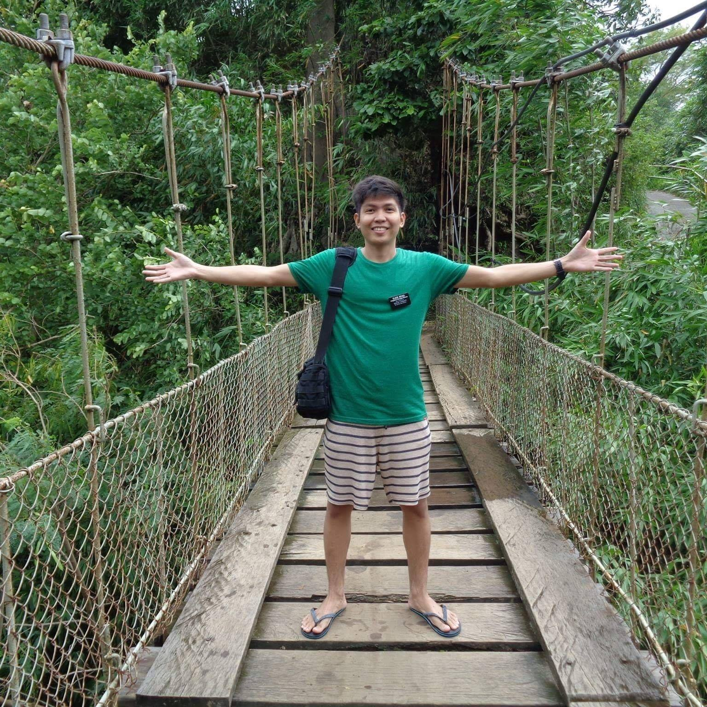

Joshua Reyes | WDD 130
Hello, my name is Joshua Reyes, I am from the Philippines, married with my beautiful wife and I've got a 1 year old son. My hobbies is reading books and interesting things in the internet and also playing call of duty mobile. I've decided to continue my studies here in BYU Idaho, to have a Bachelor's degree in Applied Tech. I am always a fan of innovative technoogies and one of the reason why I've choosen this degree. The thing that I love about BYU Idaho is because it is online, even though I am from the other side of hemisphere, I am still able to study and pursue a degree. I've been a member of the Church for 16 years already. One of my favorite scripture verse can be found in D and C 130:18-19 Whatever knowledge and intelligence we gain during mortality through our diligence and obedience will rise with us in the resurrection. Looking forward to work with y'all. Thank you for checking.